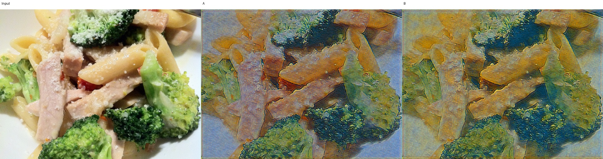
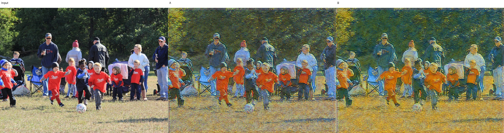
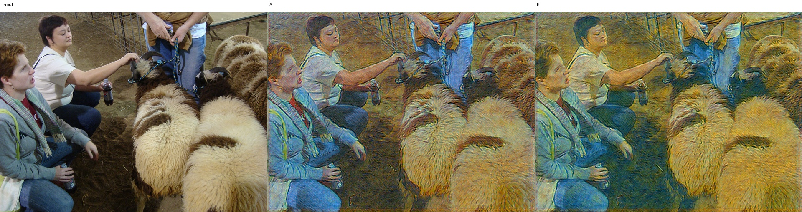
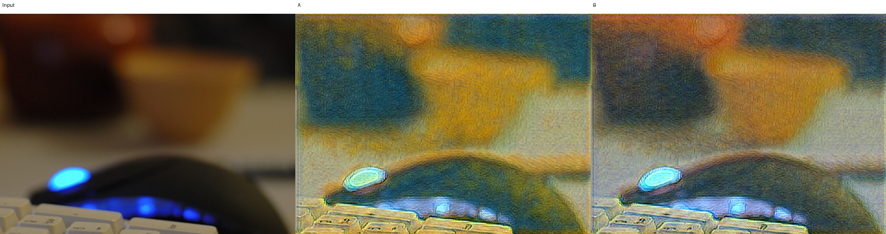
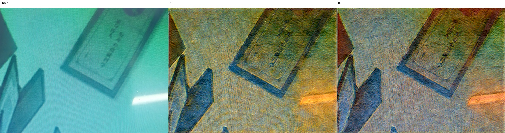
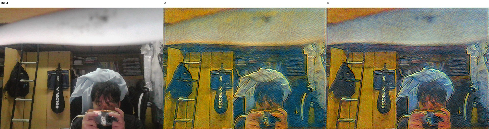

A/B blind; independent key.json. Both1000QAT affine0, frozen kernels/observers/scales, same base and seed. Difference obj_ab objective weight; one run each, not proof of a unique causal mechanism.





